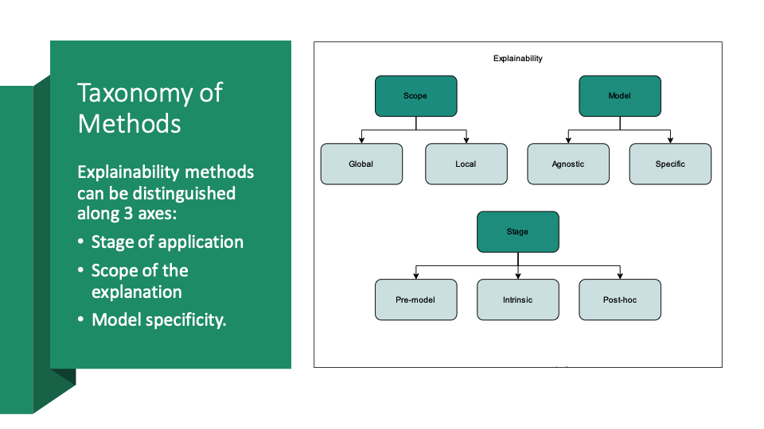

Explainability methods in AI can be systematically categorized using a three-axis taxonomy: Scope (global vs. local), Model specificity (agnostic vs. specific), and Stage of application (pre-model, intrinsic, and post-hoc). This helps practitioners select appropriate methods based on the needs of their use case—whether they need broad insight into model logic, pinpoint explanations for specific predictions, or compatibility with any type of model.
Scope: Determines whether the explanation applies to the model as a whole (global) or to individual predictions (local). For example, Partial Dependence Plots provide global insights, while SHAP values can offer both local and global perspectives.
Model Specificity: Distinguishes whether a method is model-agnostic (usable with any model, like LIME or SHAP) or model-specific (tied to a particular architecture, like attention mechanisms in transformers).
Stage of Application: Refers to when explainability is introduced—Pre-model (e.g., feature selection), Intrinsic (inherently interpretable models like decision trees), or Post-hoc (analysis applied after training, like Grad-CAM or counterfactual explanations).
Understanding this taxonomy allows researchers and practitioners to design AI systems that are not only accurate, but also trustworthy, transparent, and aligned with ethical standards.
Understanding how AI models make decisions is a crucial aspect of Explainable AI (XAI). Since traditional AI models often function as "black boxes," where their internal logic is unclear, XAI techniques help shed light on their decision-making processes.
There are multiple ways to categorize these explainability methods, each providing insights into AI’s behavior at different levels. This page introduces three key distinctions in explainability:
By understanding these fundamental concepts, we can better assess AI models in terms of trust, fairness, and reliability in real-world applications.
AI models can be categorized based on how their decision-making process is understood. Some models are intrinsically explainable, meaning their structure makes interpretation straightforward. Others require post-hoc explainability techniques to analyze their predictions after training.
Example: A decision tree is intrinsically explainable since its decisions can be traced step by step. A deep neural network, however, needs post-hoc techniques like SHAP or LIME to understand how it reaches conclusions.
| Aspect | Intrinsic Explainability | Post-hoc Explainability |
|---|---|---|
| Definition | Models that are inherently interpretable | Explainability techniques applied after training |
| Examples | Decision Trees, Linear Regression | LIME, SHAP, Attention Maps |
| Complexity | Simple and easy to interpret | Often applied to complex black-box models |
| Transparency | High transparency as the model’s logic is clear | Limited transparency since the original model remains a black box |
| Accuracy vs. Explainability Trade-off | More explainable but sometimes less accurate for complex tasks | More accurate for high-dimensional data but harder to interpret |
| Real-Life Case | Loan approval systems using decision trees allow banks to justify why a loan was approved or rejected. | Medical AI models that predict disease risk using deep learning require SHAP or LIME to highlight key influencing factors. |
Explainability methods can either be model-specific, meaning they are designed for a particular AI model, or model-agnostic, meaning they can work with any model regardless of its structure.
Example: Feature importance in a decision tree is a model-specific explanation because it only applies to decision trees. LIME, however, is model-agnostic because it can be used to interpret any AI model.
| Aspect | Model-Specific | Model-Agnostic |
|---|---|---|
| Definition | Designed for a particular type of AI model | Works with any AI model, independent of structure |
| Flexibility | Limited to a specific model family | Can be applied to any black-box AI model |
| Examples | Feature importance in decision trees, attention maps in deep learning | LIME, SHAP, Partial Dependence Plots (PDP) |
| Computational Cost | Lower because it directly leverages the model’s structure | Higher because it requires extra computations |
| Real-Life Case | Speech recognition models using recurrent neural networks rely on attention maps to show which sounds influence predictions. | Online recommendation systems use SHAP to analyze how different factors (like past purchases) contribute to product suggestions. |
Explainability techniques can be categorized based on their scope: Global explainability provides insights into the overall behavior of a model, while local explainability explains specific predictions.
Example: In credit scoring, global explainability can reveal that income is the most important factor for loan approval, while local explainability can explain why a particular applicant was rejected.
| Aspect | Global Explainability | Local Explainability |
|---|---|---|
| Definition | Explains the overall model behavior | Explains individual predictions |
| Scope | High-level model transparency | Case-by-case interpretability |
| Computational Effort | Lower, as it analyzes general trends | Higher, as it requires individual case analysis |
| Real-Life Case | AI in hiring can show that experience level is the biggest factor in predicting job performance across all applicants. | AI in healthcare can explain why one patient was diagnosed with a condition by highlighting specific test results. |